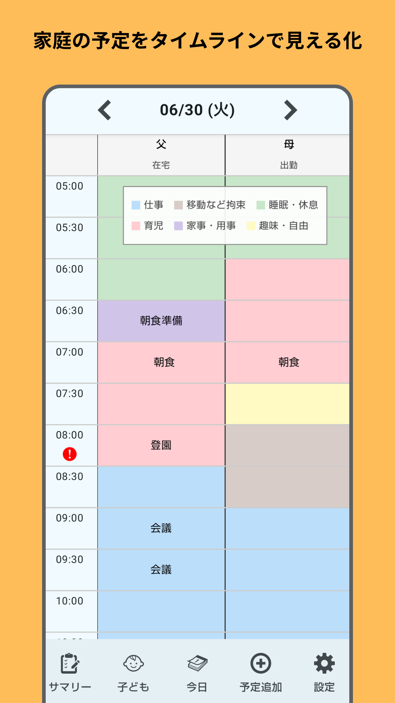
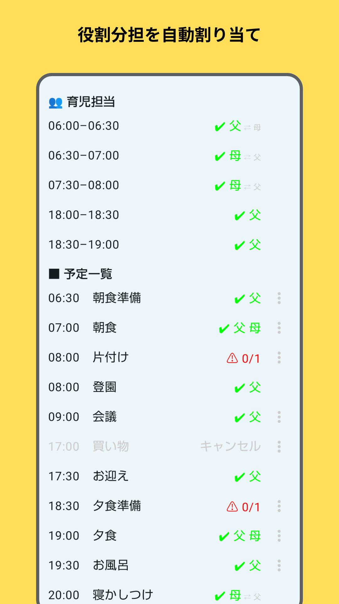
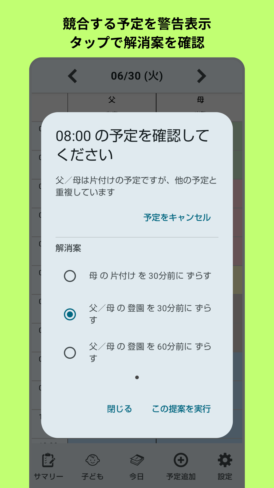
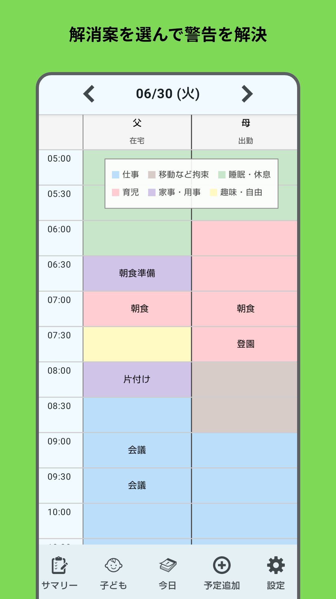
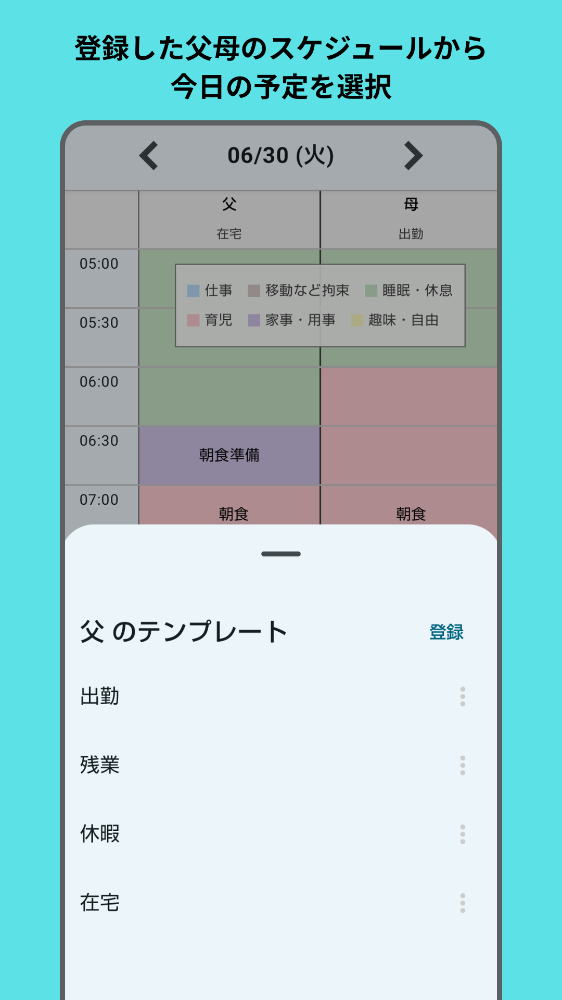
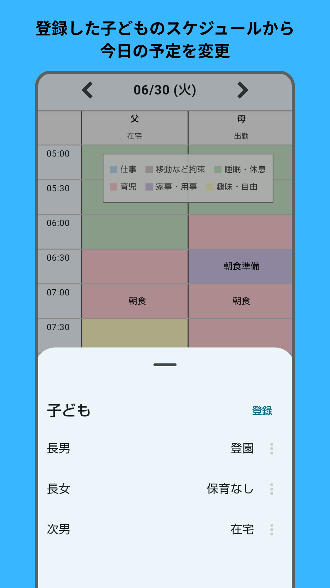

Family Scheduler
家族の予定と役割分担を見える化し、
毎日の予定調整と判断をサポートします。
Family Schedulerについて
Family Schedulerは、仕事・育児・家事など、家庭内で重なり合う予定や役割を整理するための家庭向けスケジュールアプリです。
共働きや子育て中の家庭では、 「今日は誰が送迎する？」 「仕事と家庭の予定は両立できる？」 「予定が重なったとき、どう調整する？」 といった判断が毎日のように発生します。
Family Schedulerは、家族それぞれの予定や家庭内の条件をタイムラインで見える化し、予定の重複や担当者不足を確認します。
問題がある場合には、担当者の変更や時間の調整など、状況に応じた調整案を提示します。
主な機能
- 家族それぞれの予定を1日のタイムラインで表示
- 仕事・育児・家事・休憩などの予定を管理
- 送迎や家事などの役割分担を条件に基づいて自動で割り当て
- 予定の重複や必要な担当者の不足をチェック
- 問題がある場合に調整案を提示
- 家族ごとの担当可能条件や時間帯などのルールを設定
- 仕事や休暇などの予定をテンプレートとして登録
- 子どもの生活リズムや登園・降園などの予定を登録
- 作成したタイムラインを画像として保存・共有
- 家族のスケジュールをJSON形式でバックアップ・復元
スクリーンショット






こんな家庭に
- 共働きで仕事と子育てを調整している
- 出勤・在宅勤務・短時間勤務など、働き方が多様である
- 家事や育児の役割分担を整理したい
- 送迎や家庭内の予定が重なりやすい
- 急な予定変更に対応する必要がある
- 家族全体の予定と役割をまとめて確認したい
予定を記録するだけではなく、調整するために
Family Schedulerは、予定を記録するだけのカレンダーではありません。
家族の時間、役割、予定の重なりを一緒に確認し、「家庭全体として、どうすれば今日の予定を無理なく回せるか」を考えるためのツールです。
家庭ごとの状況に合わせて条件を設定し、毎日の予定調整と役割分担をサポートします。
Google Play
Family SchedulerはGoogle Playで公開しています。
Google Playで見る